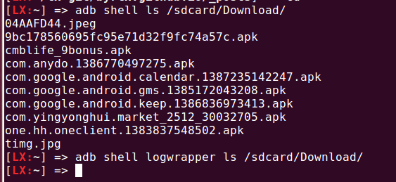
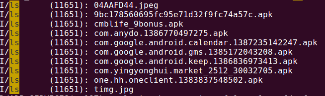

Android logwrapper
Table of Contents
(date:2013-12-28)
严格来讲，logwrapper并不属于之前写的Android的Log体系（ logger.html、 liblog.html、 logcat.html ），但是呢，它多多少少又与这套体系有些关系，所以将其称之为“外传”。
什么是logwrapper？如果你写了一个android程序，使用了一些标准输出函数（printf）， 但是有时候你无法看到这些输出（例如你写了一个native开机启动程序， 那你应该没办法在adb shell中看到你的输出吧）。 那么使用logwrapper可以将你的程序的标准输出重定向到android log或kernel log中， 就像是你调用了这些log函数(ALOGI或printk）一样。
例如，你在adb shell中输入‘logwrapper ls’， 终端上不会显示任何内容，ls的输出被重定向到了logger中， 通过logcat命令把logger的内容抓到文件中，可以看到ls的输出。 如下图。
使用logwrapper后，ls的结果没有输出到标准输出。

在logcat抓的log中发现了上面ls命令的结果。

clogwrapper 代码
logwrapper的代码位于 system/core/logwrapper目录。在最新的4.4.2_r1版本中，该模块增加到了三个源文件， （原来只有logwrapper.c这支文件）。首先看一下该模块的makefile文件Android.mk。
LOCAL_PATH:= $(call my-dir) include $(CLEAR_VARS) # ======================================================== # Static library # ======================================================== include $(CLEAR_VARS) LOCAL_MODULE := liblogwrap LOCAL_SRC_FILES := logwrap.c LOCAL_SHARED_LIBRARIES := libcutils liblog LOCAL_EXPORT_C_INCLUDE_DIRS := $(LOCAL_PATH)/include LOCAL_C_INCLUDES := $(LOCAL_PATH)/include include $(BUILD_STATIC_LIBRARY) # ======================================================== # Shared library # ======================================================== include $(CLEAR_VARS) LOCAL_MODULE := liblogwrap LOCAL_SHARED_LIBRARIES := libcutils liblog LOCAL_WHOLE_STATIC_LIBRARIES := liblogwrap LOCAL_EXPORT_C_INCLUDE_DIRS := $(LOCAL_PATH)/include LOCAL_C_INCLUDES := $(LOCAL_PATH)/include include $(BUILD_SHARED_LIBRARY) # ======================================================== # Executable # ======================================================== include $(CLEAR_VARS) LOCAL_SRC_FILES:= logwrapper.c LOCAL_MODULE := logwrapper LOCAL_STATIC_LIBRARIES := liblog liblogwrap libcutils include $(BUILD_EXECUTABLE)
从Android可以看出，在编译时，先将logwrap.c文件编译成一个动态库liblogwrap， 然后再将该动态库编译成静态库liblogwrap，最后将logwrapper.c编译成一个 可执行shell命令logwrapper。
既然上面的例子中有用到logwrapper这个命令，那先从其源代码看起。该文件的代码只有不到100行，主要的工作还是在logwrap.c中完成。先看一下main函数。
int main(int argc, char* argv[]) {
....
while ((ch = getopt(argc, argv, "adk")) != -1) {
switch (ch) {
case 'a':
abbreviated = true;
break;
case 'd':
seg_fault_on_exit = 1;
break;
case 'k':
log_target = LOG_KLOG;
klog_set_level(6);
break;
case '?':
default:
usage();
}
}
argc -= optind;
argv += optind;
if (argc < 1) {
usage();
}
rc = android_fork_execvp_ext(argc, &argv[0], &status, true,
log_target, abbreviated, NULL);
....
}
首先通过getopt()函数获取命令行选项， 不同的选项会设置不同的变量。目前logwrapper支持三个命令行选项： -a，压缩logging，该选项只保留‘命令’输出的前4K和后4K内容。 -d，‘命令’完成后，logwrapper会SIGSEGV。 -k，将‘命令’输出写到kernel log（默认是写道Android Log）。 读完命令行选项后，接下来调用android_fork_execvp_ext()函数，这是logwrapper工作的核心函数。该函数的实现在logwrap.c中。
// int android_fork_execvp_ext(int argc, char* argv[], int *status, bool ignore_int_quit,
int log_target, bool abbreviated, char *file_path) {
...
rc = pthread_mutex_lock(&fd_mutex);
if (rc) {
ERROR("failed to lock signal_fd mutex\n");
goto err_lock;
}
/* Use ptty instead of socketpair so that STDOUT is not buffered */
parent_ptty = open("/dev/ptmx", O_RDWR);
if (parent_ptty < 0) {
ERROR("Cannot create parent ptty\n");
rc = -1;
goto err_open;
}
if (grantpt(parent_ptty) || unlockpt(parent_ptty) ||
((child_devname = (char*)ptsname(parent_ptty)) == 0)) {
ERROR("Problem with /dev/ptmx\n");
rc = -1;
goto err_ptty;
}
child_ptty = open(child_devname, O_RDWR);
if (child_ptty < 0) {
ERROR("Cannot open child_ptty\n");
rc = -1;
goto err_child_ptty;
}
程序的最开始会尝试去拿fd_mutex这个锁，目前还不清楚这么做的原因。
接下来会打开/dev/ptmx这个设备节点。并通过grantpt()、unlockpt()、ptsname() 这三个函数得到对/dev/ptmx进行相关操作。最后打开从设备。
“伪终端主设备/dev/ptmx是一个流的增殖设备。这意味着当我们打开该增殖设备， 其open例程自动决定第一个未被使用的伪终端主设备并打开这个设备。 同时，打开这个主设备会自动锁定对应的从设备。 grantpt函数用来改变从设备的权限。执行如下操作： （a）将从设备的所有权改为有效用户ID；（b）将组所有权改为组tty； （c）将权限改为只允许user-read，user-write和group-write。 函数unlockpt用来清除从设备的内部锁。在打开从设备前我们必须做这件事情。 通过调用ptsname来得到从设备的名称。这个名称的格式是/dev/pts/NNN。”
上面的内容是从相关资料中摘取的对这三个函数的解释， 针对logwrapper这个程序，我的理解就是，logwrapper程序使用一个主设备， 然后它执行的‘命令’使用一个从设备，则‘命令’的输出就会透过从设备反映给主设备。 logwrapper程序再把它写到相关文件中。
pid = fork();
if (pid < 0) {
close(child_ptty);
ERROR("Failed to fork\n");
rc = -1;
goto err_fork;
} else if (pid == 0) {
pthread_mutex_unlock(&fd_mutex);
pthread_sigmask(SIG_SETMASK, &oldset, NULL);
close(parent_ptty);
// redirect stdout and stderr
dup2(child_ptty, 1);
dup2(child_ptty, 2);
close(child_ptty);
child(argc, argv);
} else {
close(child_ptty);
if (ignore_int_quit) {
struct sigaction ignact;
memset(&ignact, 0, sizeof(ignact));
ignact.sa_handler = SIG_IGN;
sigaction(SIGINT, &ignact, &intact);
sigaction(SIGQUIT, &ignact, &quitact);
}
rc = parent(argv[0], parent_ptty, pid, status, log_target,
abbreviated, file_path);
}
接着通过fork()出一个新的进程来执行‘命令’程序， 父进程和子进程分别执行parent和child函数，在子进程执行child函数之前， 会先将其stdout和stderr重定向到从设备上。这样父进程就可以接受’命令‘的输出了。
先来看下child()函数的实现。该函数的程序很简单，就是通过execvp()执行‘命令’。
static void child(int argc, char* argv[]) {
// create null terminated argv_child array
char* argv_child[argc + 1];
memcpy(argv_child, argv, argc * sizeof(char *));
argv_child[argc] = NULL;
if (execvp(argv_child[0], argv_child)) {
FATAL_CHILD("executing %s failed: %s\n", argv_child[0],
strerror(errno));
}
}
parent()实现就比较复杂一些。
// static int parent(const char *tag, int parent_read, pid_t pid,
// int *chld_sts, int log_target, bool abbreviated, char *file_path) {
...
struct pollfd poll_fds[] = {
[0] = {
.fd = parent_read,
.events = POLLIN,
},
};
struct log_info log_info;
log_info.btag = basename(tag);
if (!log_info.btag) {
log_info.btag = (char*) tag;
}
if (abbreviated && (log_target == LOG_NONE)) {
abbreviated = 0;
}
if (abbreviated) {
init_abbr_buf(&log_info.a_buf);
}
if (log_target & LOG_KLOG) {
snprintf(log_info.klog_fmt, sizeof(log_info.klog_fmt),
"<6>%.*s: %%s", MAX_KLOG_TAG, log_info.btag);
}
if ((log_target & LOG_FILE) && !file_path) {
/* No file_path specified, clear the LOG_FILE bit */
log_target &= ~LOG_FILE;
}
if (log_target & LOG_FILE) {
fd = open(file_path, O_WRONLY | O_CREAT, 0664);
if (fd < 0) {
ERROR("Cannot log to file %s\n", file_path);
log_target &= ~LOG_FILE;
} else {
lseek(fd, 0, SEEK_END);
log_info.fp = fdopen(fd, "a");
}
}
log_info.log_target = log_target;
log_info.abbreviated = abbreviated;
while (!found_child) {
if (TEMP_FAILURE_RETRY(poll(poll_fds, ARRAY_SIZE(poll_fds), -1)) < 0) {
ERROR("poll failed\n");
rc = -1;
goto err_poll;
}
if (poll_fds[0].revents & POLLIN) {
sz = read(parent_read, &buffer[b], sizeof(buffer) - 1 - b);
sz += b;
// Log one line at a time
for (b = 0; b < sz; b++) {
if (buffer[b] == '\r') {
if (abbreviated) {
buffer[b] = '\n';
} else {
buffer[b] = '\0';
}
} else if (buffer[b] == '\n') {
buffer[b] = '\0';
log_line(&log_info, &buffer[a], b - a);
a = b + 1;
}
}
if (a == 0 && b == sizeof(buffer) - 1) {
// buffer is full, flush
buffer[b] = '\0';
log_line(&log_info, &buffer[a], b - a);
b = 0;
} else if (a != b) {
// Keep left-overs
b -= a;
memmove(buffer, &buffer[a], b);
a = 0;
} else {
a = 0;
b = 0;
}
}
if (poll_fds[0].revents & POLLHUP) {
int ret;
ret = waitpid(pid, &status, WNOHANG);
if (ret < 0) {
rc = errno;
ALOG(LOG_ERROR, "logwrap", "waitpid failed with %s\n", strerror(errno));
goto err_waitpid;
}
if (ret > 0) {
found_child = true;
}
}
}
parent()函数的主体是一个while()循环，当主设备中有数据可读时，将其读出， 并调用log_line()写入相应的log文件。
/* Log directly to the specified log */
static void do_log_line(struct log_info *log_info, char *line) {
if (log_info->log_target & LOG_KLOG) {
klog_write(6, log_info->klog_fmt, line);
}
if (log_info->log_target & LOG_ALOG) {
ALOG(LOG_INFO, log_info->btag, "%s", line);
}
if (log_info->log_target & LOG_FILE) {
fprintf(log_info->fp, "%s\n", line);
}
}
/* Log to either the abbreviated buf, or directly to the specified log
* via do_log_line() above.
*/
static void log_line(struct log_info *log_info, char *line, int len) {
if (log_info->abbreviated) {
add_line_to_abbr_buf(&log_info->a_buf, line, len);
} else {
do_log_line(log_info, line);
}
}
static void add_line_to_abbr_buf(struct abbr_buf *a_buf, char *linebuf, int linelen) {
if (!a_buf->beginning_buf_full) {
a_buf->beginning_buf_full =
add_line_to_linear_buf(&a_buf->b_buf, linebuf, linelen);
}
if (a_buf->beginning_buf_full) {
add_line_to_circular_buf(&a_buf->e_buf, linebuf, linelen);
}
}
如果abbreviated没有被设置，则通过do_log_line()直接把log写入相应位置。 否则调用add_line_to_abbr_buf()，把log写入到log_info结构体的buf中。
if (chld_sts != NULL) {
*chld_sts = status;
} else {
if (WIFEXITED(status))
rc = WEXITSTATUS(status);
else
rc = -ECHILD;
}
// Flush remaining data
if (a != b) {
buffer[b] = '\0';
log_line(&log_info, &buffer[a], b - a);
}
/* All the output has been processed, time to dump the abbreviated output */
if (abbreviated) {
print_abbr_buf(&log_info);
}
if (WIFEXITED(status)) {
if (WEXITSTATUS(status)) {
snprintf(tmpbuf, sizeof(tmpbuf),
"%s terminated by exit(%d)\n", log_info.btag, WEXITSTATUS(status));
do_log_line(&log_info, tmpbuf);
}
} else {
if (WIFSIGNALED(status)) {
snprintf(tmpbuf, sizeof(tmpbuf),
"%s terminated by signal %d\n", log_info.btag, WTERMSIG(status));
do_log_line(&log_info, tmpbuf);
} else if (WIFSTOPPED(status)) {
snprintf(tmpbuf, sizeof(tmpbuf),
"%s stopped by signal %d\n", log_info.btag, WSTOPSIG(status));
do_log_line(&log_info, tmpbuf);
}
}
err_waitpid:
err_poll:
if (log_target & LOG_FILE) {
fclose(log_info.fp); /* Also closes underlying fd */
}
if (abbreviated) {
free_abbr_buf(&log_info.a_buf);
}
return rc;